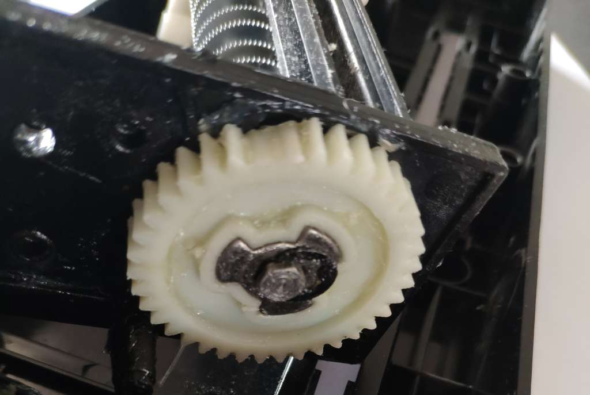

What
After just two days and, well, approx. 1500 shredded pages, my inexpensive Olympia PS 16 document shredder broke down. I’ve opened it up, found the issue and replaced the motor and broken gearbox with a cordless drill. It’s a simple hack that will work on most of these shredders and save the machines from landfill. Along the way I’ve taken the opportunity to try out options for connecting motors to axles.

Contents
When
The amount of paper the average German citizen is mandated to keep is mind blowing. We supposed to keep monthly income statements, eight pages quarterly of social security confirmation letters, annual health insurrance fee raises, ultility bills, work contracts, contract extensions, paperwork for taxes, property papers, diplomas, testimonies, school reports and much more. Combined with folders from my studies I had accumulated some 16 folders full of paper work.
Why
What do we do about this? We kill it. All of it. By scanning, shredding and saving the scans to CDs. For this purpose I’ve acquired an auto-feed document scanner that I’ve recently fixed (see Auto-Feed Scanner). As well as the “Olympia PS 16” document shredder that broke down under the shear amount of paper I’ve shredded in the past weeks.
Backup Strategies for Digital Data
Regarding loss of digital data: There is the well-known 3-2-1 rule for backups. Remember a rule is only guideline. The guideline is to have
- a primary copy. This can be your computers hard disk. Better a disk in a hot-swap bay so it is normally disconected when not in use for protection from viruses and hackers, reducing the wear on the drive, protecting from lightning strikes. That disk can be encrypted to protect from burglars.
- two back-up copies. I use additional encrypted disks, synchronised with Back-In-Time [1] that uses rsync underneath and linux hard-links on Linux partitions for very fast duplicate free backups.
- one back-up disk at home, one off-site
- and as an additional unmodifiable backup media I use blu-ray disks for the less-often changing data. 90% of the data we produce is store-once read-only anyway. In future, with even better technology I’m sure blu-rays could be read from scans with a DIY microscope, if blu-rays readers were to disappear. From experience with retro-computing I rest assured that there will always be someone somewhere builing an adapter for old storage media.
- additionally having as much as possible in Git repositories is great. This works well even for non-diffable already compressed files like music and scans as long as you’re mostly adding and not modifying them. Git repos automatically compress, keep track of changes, make it possible to revert files to earlier state, make it easy to synchronize across devices and can be used decentralized. Git has features to solve merge conflicts. It remedies the need to have a home server or NAS running 24/7 wasting electricity. Though Git is probably only something interesting for developers due to its learning curve.
But I’ve gone on a tangent. Last time around I’ve fixed the scanner (see Auto-Feed Scanner). This time I’m fixing the shredder.
Background
Dissassembly
After removing the screws on the back of the device we find the motor, gear box and cutting blades.
I had expected the cutting blades to have bent causing them to get caught in each other.
But turns out that some of the tooths of the main plastic gear simply disintegerated under the load.
How
Gearbox Removal
Since the motor and gear box is broken anyway, was weak to begin with, extremly loud in operation and replacement parts would likely break again, I’ve decided to just replace it all with a cordless drill motor.
To do this we tear out the engine gear box assembly to expose the axle.
Most of the gears can just be pulled off. Some have small brackets we just pry off with a thin screw driver.
As a first test we can just directly connect the cordless drill and give it a try.

Axle/Motor Coupling
To be able to reassemble the shredder while enabling a drill to be connected to turn the cutting blades we need to make the axle longer.
For this we can use the same approaches DIYers use to connect machines to motor axles.
- tube pressfit with/without glue - failed, due to slippage
- adding a hose clamp - failed, axle is to small

- a flexible motor coupler from 3D printing - failed, tore in half

- drilling into a threaded rod connector, tapping screw holes and using more powerful screws - works
Modify the enclosure
To make the axle accessable for the drill I’ve just ripped a hole in the side using an angled drill bit.
Progress
Result
With that the shredder works just fine. The brushless motor of my cordless drill is many times quieter and more powerful. Only inconvenience is that you need to hold the shredder with one hand and the drill with the other, otherwise it will spiral out of control. That could easily be fixed.
I’m sure this approach will work on many defunct document shredders.
1] https://backintime.readthedocs.io/en/latest/